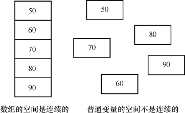
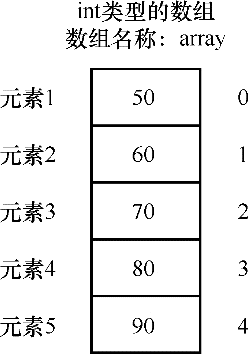
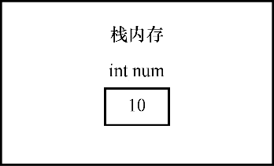
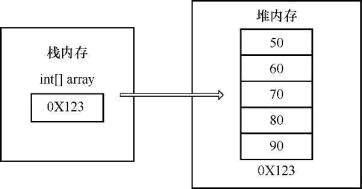
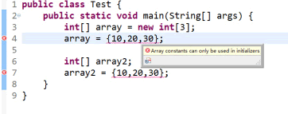
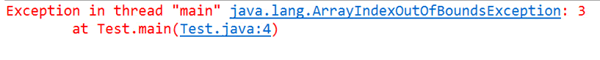
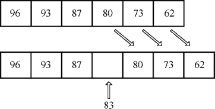

首页 > 编程笔记
Java数组的定义和使用（入门必读）
计算机将程序中需要用到的数据保存在内存中，直接通过内存地址去取值的方式很麻烦，不利于代码的开发，所以引入了变量的概念，相当于给内存起了一个别名。通过自定义的变量名就可以找到内存中存储数据的位置，进而取出其中的数据。
思考这样一个问题，如果是信息量较大的一组数据，用哪种方式保存效率更高呢？
我们当然可以创建多个变量来表示这些数据，但是很显然这种方式并不是很合理，变量个数太多不利于统一管理，并且变量的命名也会有很多限制。就好比我们管理了一间货物随意摆放、没有分门别类进行整理的超市，会是一件很苦恼的事情。程序也一样，我们应该对这种存储方式进行优化，对于超市来说就是将不同种类的货物统一摆放到对应的货架上。程序中也有具有类似功能的一种数据结构，这就是数组。
数组就是一种可以存放大量数据类型相同的变量的数据结构，是一个具有相同数据类型的数据集合。
数组中的数据必须是同一种数据类型，可以类比现实生活中学校的所有学生、机房里的所有计算机等。我们知道使用变量来保存数据，需要在内存中开辟一块空间，而数组就是在内存中开辟一串连续的空间来保存数据，如下图所示。
一个数组由 4 种基本元素构成，分别是数组名称、数组元素、元素下标、数据类型。数组本身也是一个变量，既然是一个变量，就需要定义变量名，也就是数组名称。数组中保存的每一个数据都会有一个下标（从0开始），相当于编号，通过编号可以快速检索到对应的元素。数组中的所有元素必须是同一种数据类型，如下图所示。
【实例】下列哪组数据可以构成一个数组？如果能，应该选择哪种数据类型？
语法格式如下：
例如：
例如，张三身高（单位：cm）为 179，李四身高为 182，王五身高为 167，小明身高为 176，要求创建一个数组，保存 4 个用户的身高，并且求出平均值，具体实现代码如下：
引用数据类型的变量保存在栈内存中。而变量的值，也就是引用实际指向的对象，保存在堆内存中，即栈内存保存的是堆内存的地址。
什么是引用数据类型？这里大家可以简单记为只要是通过 new 关键字创建的变量都是引用类型，如 String 和数组。int[] array = {50,60,70,80,90} 在内存中的存储如下图所示。
常见错误如下：
1) 数组声明时数据类型不匹配，错误示例如下所示。
2) 边声明边赋值必须写在同一行，错误示例代码如下所示。
3) 数组下标越界，通过下标取值时给出的下标超出了数组的长度范围。这里需要注意的是，数组下标是从 0 开始的，如果数组长度为 3，下标的界限为 0~2，如果数组长度为 5，下标的界限为0~4，错误示代码如下所示。
java.lang.ArrayIndexOutOfBoundsException 表示错误原因是数组下标越界，array 的长度为 3，所以下标的界限为 0~2，3 已经超出这个范围。
初始化数组长度为 6，现要求插入一个元素。因为数组一旦创建长度是不可改变的，所以首先需要创建一个长度为7的新数组来存储插入之后的所有元素。然后将原数组的值复制到新数组中，同时指定位置之后的元素依次向后移动一位，最后将目标元素保存到指定位置即可，如下图所示。
具体实现代码如下所示。
例如需要对数组进行排序，我们并不需要自己写冒泡排序，直接调用 Arrays 类的方法即可完成，Arrays 类的具体使用如下所示。
思考这样一个问题，如果是信息量较大的一组数据，用哪种方式保存效率更高呢？
我们当然可以创建多个变量来表示这些数据，但是很显然这种方式并不是很合理，变量个数太多不利于统一管理，并且变量的命名也会有很多限制。就好比我们管理了一间货物随意摆放、没有分门别类进行整理的超市，会是一件很苦恼的事情。程序也一样，我们应该对这种存储方式进行优化，对于超市来说就是将不同种类的货物统一摆放到对应的货架上。程序中也有具有类似功能的一种数据结构，这就是数组。
数组就是一种可以存放大量数据类型相同的变量的数据结构，是一个具有相同数据类型的数据集合。
数组中的数据必须是同一种数据类型，可以类比现实生活中学校的所有学生、机房里的所有计算机等。我们知道使用变量来保存数据，需要在内存中开辟一块空间，而数组就是在内存中开辟一串连续的空间来保存数据，如下图所示。

图 1 数组的空间是连续的
图 1 数组的空间是连续的
数组的基本要素
了解完数组的基本概念，接下来我们学习数组的结构。一个数组由 4 种基本元素构成，分别是数组名称、数组元素、元素下标、数据类型。数组本身也是一个变量，既然是一个变量，就需要定义变量名，也就是数组名称。数组中保存的每一个数据都会有一个下标（从0开始），相当于编号，通过编号可以快速检索到对应的元素。数组中的所有元素必须是同一种数据类型，如下图所示。

图 2 int类型的数组
图 2 int类型的数组
【实例】下列哪组数据可以构成一个数组？如果能，应该选择哪种数据类型？
“张三”、“李四”、true、“王五”
10.5、66、“小明”、‘男’
12、33、66、80
22.5f、33.6f、100.0f、202.2f
- 第 1 组不可以，因为同时包含了 String 类型和 boolean 类型；
- 第 2 组不可以，因为同时包含了 double 类型、int 类型、String 类型、char 类型；
- 第 3 组可以，因为数组的类型均为 int；
- 第 4 组可以，因为数组的类型均为 float。
如何使用数组
数组也是一个变量，创建数组的步骤和创建普通变量基本一致，具体步骤如下。1) 声明数组
数据类型[] 数组名;如“int[] array1;”表示声明了一个 int 类型的数组，该数组中只能存放 int 类型的数据，“String[] array2;”表示声明了一个 String 类型的数组，该数组中只能存放 String 类型的数据。
2) 分配内存空间
创建数组必须要指定数组的长度，根据指定长度在内存中开辟一串连续的空间，并且长度不能修改。语法格式如下：
数组名=new 数据类型[数组长度];例如“array1 = new int[6];”表示 array1 的长度为 6；例如“array2 = new String[7];”表示 array2 的长度为 7。
3) 给数组赋值
分配完内存空间就可以向数组中存值了，通过下标找到数组中对应的内存空间，完成赋值，相当于通过编号找到储物柜，然后把需要保存的物品放入柜子。例如：
array1[0] = 1; array1[2] = 3; array2[1] = “Java”; array2[3] = “Hello World”;
4) 使用数组
当数组创建完成后，可以通过下标获取数组中的数据，相当于通过编号找到储物柜，然后取出柜子中保存的物品。例如，张三身高（单位：cm）为 179，李四身高为 182，王五身高为 167，小明身高为 176，要求创建一个数组，保存 4 个用户的身高，并且求出平均值，具体实现代码如下：
public class Test {
public static void main(String[] args) {
int[] array;
array = new int[4];
array[0] = 179;
array[1] = 182;
array[2] = 167;
array[3] = 176;
//遍历数组计算平均值,数组长度可以通过length属性获取
double sum = 0;
for(int i = 0;i < array.length;i++){
sum += array[i];
}
double avg = sum/array.length;
System.out.println("平均身高是："+avg);
}
}
运行结果为：
平均身高是：176.0
上述代码可以进一步简化，声明数组和开辟空间可以用一行代码完成，代码如下所示。
public class Test {
public static void main(String[] args) {
int[] array = new int[4];
array[0] = 179;
array[1] = 182;
array[2] = 167;
array[3] = 176;
//遍历数组计算平均值,数组长度可以通过length属性获取
double sum = 0;
for(int i = 0;i < array.length;i++){
sum += array[i];
}
double avg = sum/array.length;
System.out.println("平均身高是："+avg);
}
}
声明数组时，[ ]可以放在数据类型的后面，也可以放在数组名后面，即 int[] array 和 int array[] 都可以。边声明边赋值有两种方式，代码如下所示。
public class Test {
public static void main(String[] args) {
int[] array1 = {10,20,30};
int[] array2 = new int[]{10,20,30};
}
}
数组与我们之前介绍的变量在内存中的保存方式是不同的。内存可以简单分为栈内存和堆内存。基本数据类型的变量和值都保存在栈内存中，在栈内存开辟的空间中直接放入数据，比如 int num=10 在栈内存中的存储如下图所示。

图 3 num在栈内存中的存储
图 3 num在栈内存中的存储
引用数据类型的变量保存在栈内存中。而变量的值，也就是引用实际指向的对象，保存在堆内存中，即栈内存保存的是堆内存的地址。
什么是引用数据类型？这里大家可以简单记为只要是通过 new 关键字创建的变量都是引用类型，如 String 和数组。int[] array = {50,60,70,80,90} 在内存中的存储如下图所示。

图 4 array在内存中的存储
图 4 array在内存中的存储
常见错误如下：
1) 数组声明时数据类型不匹配，错误示例如下所示。
public class Test {
public static void main(String[] args) {
int[] array = new String[3];
}
}
Eclipse 会提示错误信息，并给出解决方法：将 array 的类型改为 String[]，保证前后一致。2) 边声明边赋值必须写在同一行，错误示例代码如下所示。
public class Test {
public static void main(String[] args) {
int[] array = new int[3];
array = {10,20,30};
int[] array2;
array2 = {10,20,30};
}
}
运行代码，报错信息如下图所示。

图 5 报错信息
图 5 报错信息
3) 数组下标越界，通过下标取值时给出的下标超出了数组的长度范围。这里需要注意的是，数组下标是从 0 开始的，如果数组长度为 3，下标的界限为 0~2，如果数组长度为 5，下标的界限为0~4，错误示代码如下所示。
public class Test {
public static void main(String[] args) {
int[] array = {10,20,30};
System.out.println(array[3]);
}
}
运行代码，报错信息为：

图 6 报错信息
图 6 报错信息
java.lang.ArrayIndexOutOfBoundsException 表示错误原因是数组下标越界，array 的长度为 3，所以下标的界限为 0~2，3 已经超出这个范围。
数组的常用操作
在实际开发中，数组的使用非常广泛，这里给大家介绍几种最常用的操作：1) 求数组中的最大值和最小值
求最大值和最小值的基本思路是一样的，取出数组中的第一个元素，依次与数组中的其他元素进行对比，找到目标，具体实现代码如下所示。
public class Test {
public static void main(String[] args) {
int[] array = {73,80,62,93,96,87};
int max = array[0];
for(int i = 1;i < array.length;i++){
if(array[i] > max){
max = array[i];
}
}
System.out.println("最大值是"+max);
int min = array[0];
for(int i = 1;i < array.length;i++){
if(array[i] < min){
min = array[i];
}
}
System.out.println("最小值是"+min);
}
}
运行结果为：
最大值是96
最小值是62
2) 在数组的指定位置插入一个数据
假设现有数组 int[] array = {96,93,87,80,73,62}，要求将 83 插入到下标为3的位置。初始化数组长度为 6，现要求插入一个元素。因为数组一旦创建长度是不可改变的，所以首先需要创建一个长度为7的新数组来存储插入之后的所有元素。然后将原数组的值复制到新数组中，同时指定位置之后的元素依次向后移动一位，最后将目标元素保存到指定位置即可，如下图所示。

图 7 数组中插入数据
图 7 数组中插入数据
具体实现代码如下所示。
import java.util.Arrays;
public class Test {
public static void main(String[] args) {
//在数组下标为3的位置添加83
int[] array = {96,93,87,80,73,62};
int score = 83;
int[] array2 = new int[array.length+1];
for(int i = 0; i < 3; i++){
array2[i] = array[i];
}
array2[3] = 83;
for(int i = 4;i<array2.length;i++){
array2[i] = array[i-1];
}
//Arrays工具类的toString方法可以将数组的元素依次取出拼接成一个字符串
System.out.println("添加新元素之前的数组："+Arrays.toString(array));
System.out.println("添加新元素之后的数组："+Arrays.toString(array2));
}
}
运行结果如下图所示。
添加新元素之前的数组：[96,93,87,80,73,62]
添加新元素之后的数组：[96,93,87,83,80,73,62]
4) 数组排序
数组排序是指按照升序或降序对一个数组中的所有元素进行排序，实现思路是：依次比较数组中相邻的两个数字，如果是升序排列，则较大的数字放后面；如果是降序排列，则较大的数字放前面。这种方式也叫作冒泡排序，是一种常用算法，具体实现代码如下所示。
import java.util.Arrays;
public class Test {
public static void main(String[] args) {
int[] array = {73,80,62,93,96,87};
//升序排列，大的放后面
for(int j = 0; j < array.length-1;j++){
for(int i = 0; i < array.length-1-j;i++){
if(array[i] > array[i+1]){
int temp = array[i];
array[i] = array[i+1];
array[i+1] = temp;
}
}
}
System.out.println("升序排列："+Arrays.toString(array));
//降序排列，小的放后面
for(int j = 0; j < array.length-1;j++){
for(int i = 0; i < array.length-1-j;i++){
if(array[i] < array[i+1]){
int temp = array[i];
array[i] = array[i+1];
array[i+1] = temp;
}
}
}
System.out.println("降序排列："+Arrays.toString(array));
}
}
运行结果为：
升序排列：[62,73,80,87,93,96]
降序排列：[96,93,87,80,73,62]
例如需要对数组进行排序，我们并不需要自己写冒泡排序，直接调用 Arrays 类的方法即可完成，Arrays 类的具体使用如下所示。
import java.util.Arrays;
public class Test {
public static void main(String[] args) {
int[] array = {73,80,62,93,96,87};
int[] array2 = {73,80,62,93,96,87};
int[] array3 = {66,55,44,33,22};
System.out.println(Arrays.equals(array, array2));
Arrays.sort(array);
System.out.println(Arrays.toString(array));
Arrays.fill(array2, 66);
System.out.println(Arrays.toString(array2));
int[] copyArray = Arrays.copyOf(array3, 10);
System.out.println(Arrays.toString(copyArray));
int index = Arrays.binarySearch(array, 87);
System.out.println(index);
}
}
运行结果为：
true
[62, 73, 80, 87, 93, 96]
[66, 66, 66, 66, 66, 66]
[66, 55, 44, 33, 22, 0, 0, 0, 0, 0]
3
关注公众号「站长严长生」，在手机上阅读所有教程，随时随地都能学习。内含一款搜索神器，免费下载全网书籍和视频。

微信扫码关注公众号